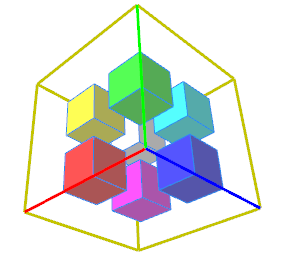

center operation
Syntax
center(axes)
Parameters
- axes (selector)
x, y, z, xy, xz, yz, xyz Axes to include in center calculation.
Description
The center operation moves the scope of the current shape to the center of the previous shape's scope. 'Previous shape' means the previous shape on the shape stack.
Related
Examples
Positions of the axes selectors
|  |
Lot-->
primitiveCube()
s(4,4,4)
t(-2,-2,-2)
SelCube
SelCube-->
[ color("#ff0000") s(1,1,1) center(x) X ]
[ color("#00ff00") s(1,1,1) center(y) X ]
[ color("#0000ff") s(1,1,1) center(z) X ]
[ color("#ffff00") s(1,1,1) center(xy) X ]
[ color("#ff00ff") s(1,1,1) center(xz) X ]
[ color("#00ffff") s(1,1,1) center(yz) X ]
[ color("#ffffff") s(1,1,1) center(xyz) X ]
The colored small cubes show the positions of the axis selectors relative to the previous shape's (SelCube) scope. |
Copyright ©2008-2025 Esri R&D Center Zurich. All rights reserved.